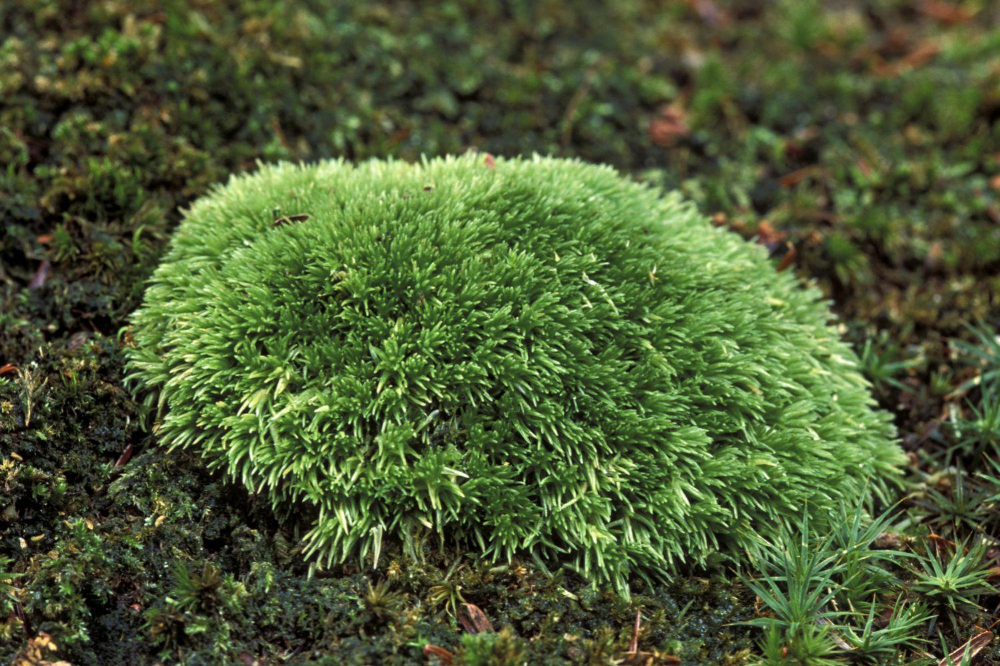
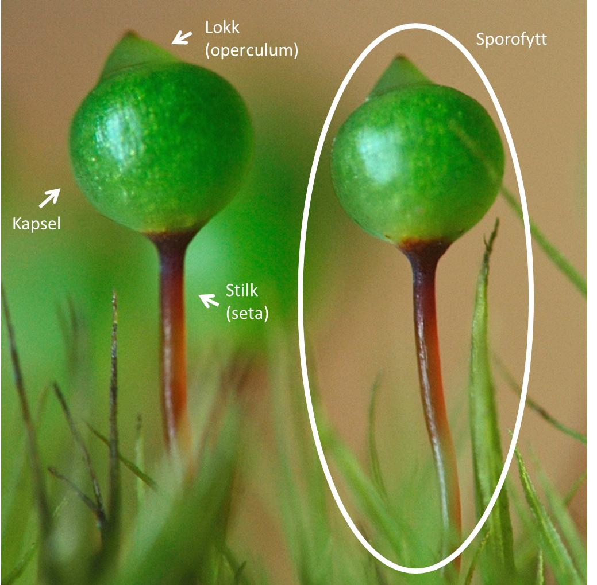
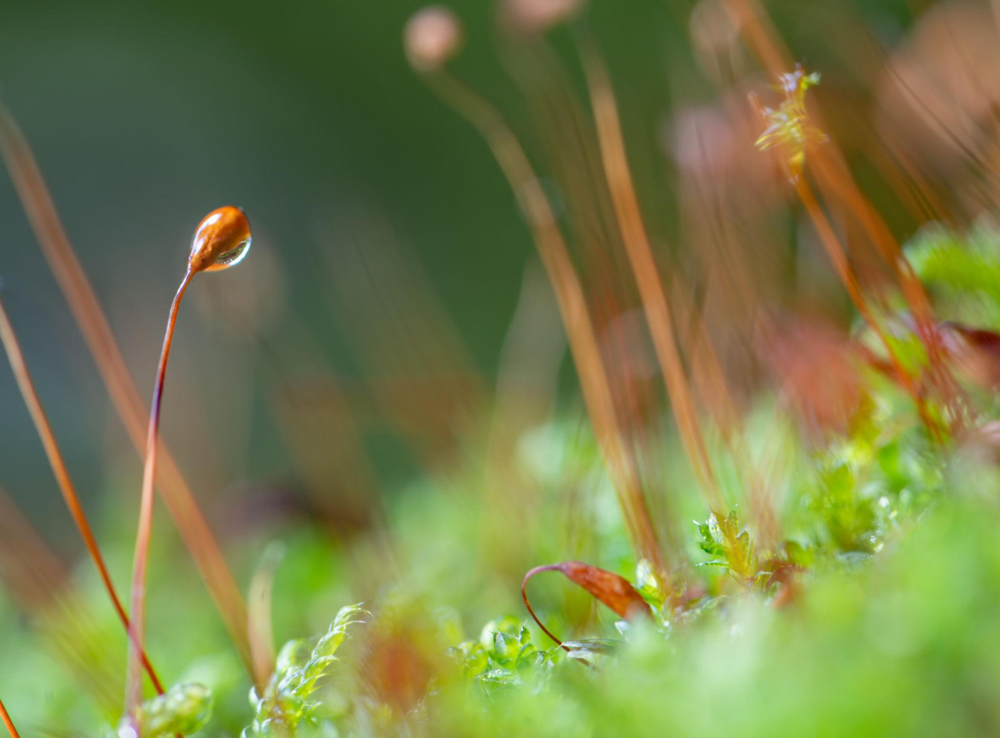
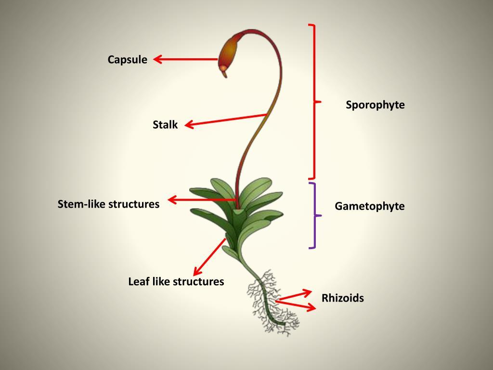
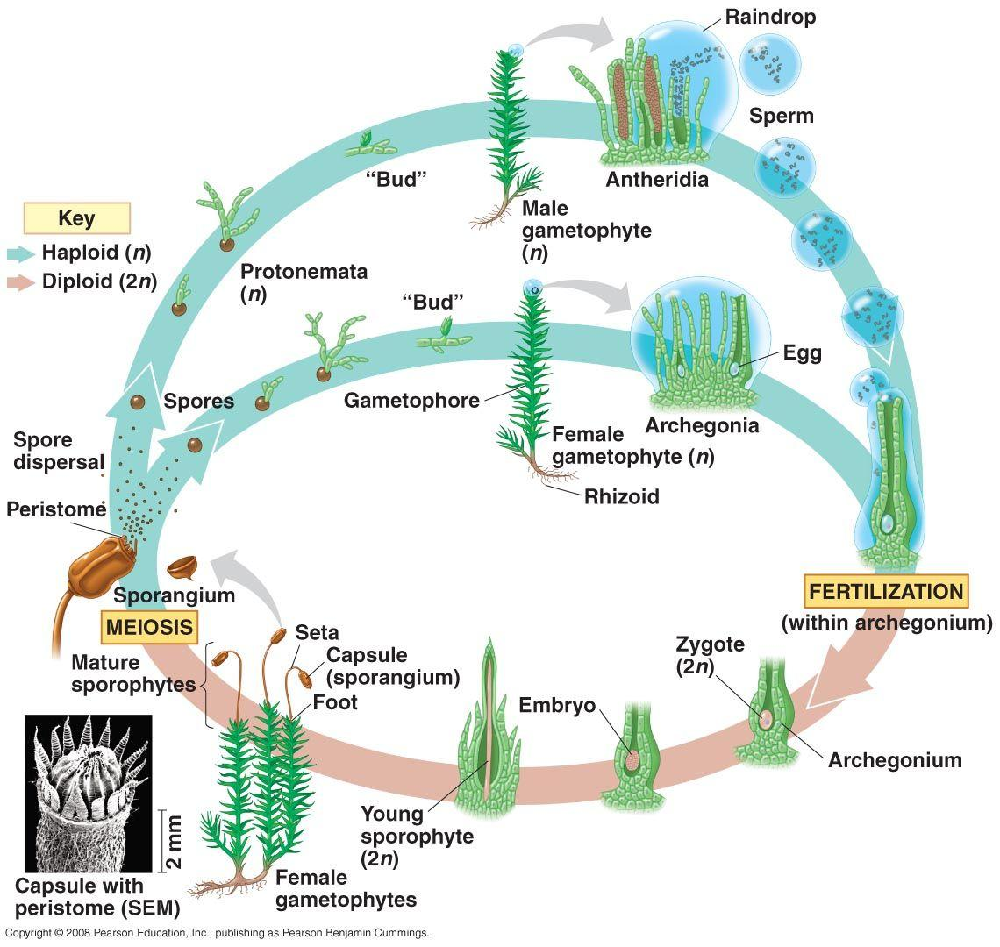

Les fougères ont développé des tissus conducteurs qui facilitent le transport de l'eau et des éléments nutritifs.
La lignine renforce les tissus et contribue au maintien de la plante.
Ces innovations permettent aux fougères de développer de véritables racines, tiges et feuilles.

L'appareil vegetatif d'une mousse correspond au gamétophyte dominant composé de phylloîdes, cauloîdes et de rhizoîdes.
Elle absorbe principalement l'eau et les éléments minéraux par sa surface.
Sa petite taille et sa dépendance à l'humidité limitent souvent son développement dans les milieux secs

La mousse se reproduit par des spores produites dans une capsule portée par le sporophyte.
En présence d'eau, les gamètes mâles peuvent rejoindre les gamètes femelles pour permettre la fécondation